Moon Market 판매 현황 보고서
Executive Summary
본 보고서는 Moon Market의 판매 현황을 세일즈 및 마케팅 관점에서 분석한 결과입니다. 총 1,220건의 주문 데이터를 분석한 결과, 총 매출은 8,619,150원이며 평균 주문 금액은 7,065원입니다. 과일 카테고리가 전체 매출의 46.0%를 차지하며 가장 높은 매출 기여도를 보이고 있습니다. 프로모션 적용 시 평균 주문 금액이 95.8% 증가하는 효과가 있으며, 50대 남성, 30대 남성, 30대 여성이 전체 매출의 54.2%를 차지하는 핵심 고객층입니다. 5월과 주말(일요일, 금요일)에 매출이 높게 나타나는 시간적 패턴이 관찰됩니다.
주요 발견사항
- 과일 카테고리의 고수익성: 주문 건수는 채소보다 적지만(414 vs 458), 매출 기여도는 가장 높음(46.0%)
- 프로모션의 높은 효과: 프로모션 적용 시 평균 주문 금액이 95.8% 증가(3,764원 → 7,369원)
- 핵심 고객층 식별: 50대 남성, 30대 남성, 30대 여성이 전체 매출의 54.2% 차지
- 잠재 고가치 고객: 20대 남성은 평균 주문 금액(13,933원)이 가장 높지만 주문 건수는 적음
- 시간적 패턴: 5월과 주말(일요일, 금요일)에 매출이 높게 나타남
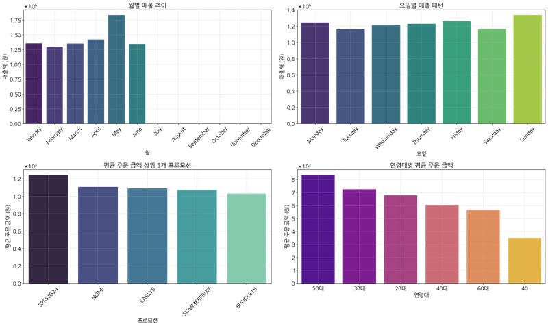
Moon Market 핵심 인사이트 요약 대시보드
1. 데이터 개요
Moon Market 판매 데이터 분석을 위해 './data/Dat-fresh-food-claude.csv' 파일을 로드하여 분석했습니다. 데이터는 총 1,220개 행, 18개 컬럼으로 구성되어 있으며, 주요 컬럼으로는 Date(날짜), Status(상태), Category(카테고리), Qty(수량), Amount(금액), promotion-ids(프로모션), Gender(성별), Age Group(연령대) 등이 있습니다.
주요 데이터 특성:
- 총 주문 건수: 1,220건
- 총 매출: 8,619,150원
- 평균 주문 금액: 7,065원
- 금액(Amount) 범위: 최소 2,900원 ~ 최대 23,700원
- 수량(Qty) 범위: 최소 1개 ~ 최대 3개, 평균 1.79개
1.1 카테고리 분포
Moon Market의 제품은 채소, 과일, 유제품 세 가지 카테고리로 구분됩니다. 카테고리별 주문 건수는 채소(458건), 과일(414건), 유제품(348건)으로 채소 판매가 가장 많습니다.

Moon Market 카테고리별 주문 건수 그래프
1.2 고객 세그먼트 분포
주 고객층은 30대(33.8%), 40-50대(49.1%)로 중장년층이 주요 고객입니다. 성별 분포는 여성(50.2%)과 남성(49.8%)이 거의 균등합니다. 20대 고객(9.2%)은 상대적으로 적어 젊은 층을 타겟으로 한 마케팅 강화가 필요할 수 있습니다.
2. 판매 현황 분석
2.1 일별 매출 추이
일별 매출은 변동성이 있으며, 특정 일자에 매출 피크가 관찰됩니다. 이는 프로모션 효과나 계절적 요인에 의한 것으로 추정됩니다.

Moon Market 일별 매출 추이 그래프
2.2 카테고리별 매출
카테고리별 매출은 과일(3,967,350원), 채소(2,389,700원), 유제품(2,262,100원) 순으로 높게 나타납니다. 과일 카테고리는 주문 건수는 채소보다 적지만 총 매출액은 가장 높아 고수익성을 보여줍니다.

Moon Market 카테고리별 총 매출 그래프
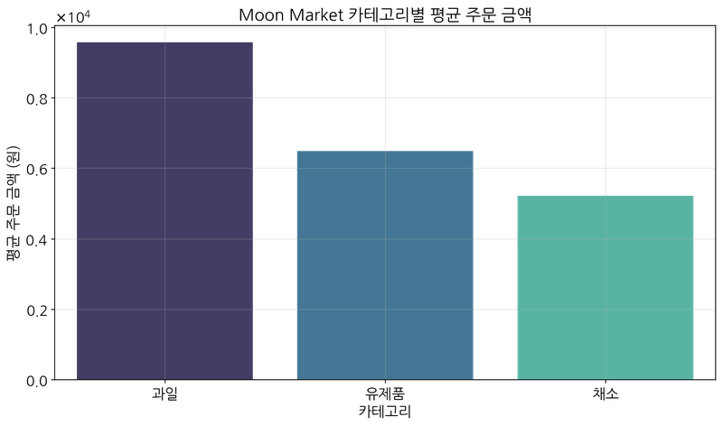
Moon Market 카테고리별 평균 주문 금액 그래프
카테고리별 평균 주문 금액:
- 과일: 9,582원
- 유제품: 6,500원
- 채소: 5,217원
과일 제품의 평균 주문 금액이 채소나 유제품보다 훨씬 높아, 고객들이 과일에 더 높은 지불 의사를 보이는 것으로 분석됩니다.
2.3 제품별 판매량
판매량 기준 상위 제품들은 대부분 6개 단위로 판매되며, 과일, 유제품, 채소 카테고리에서 고르게 인기 제품이 분포하고 있습니다.
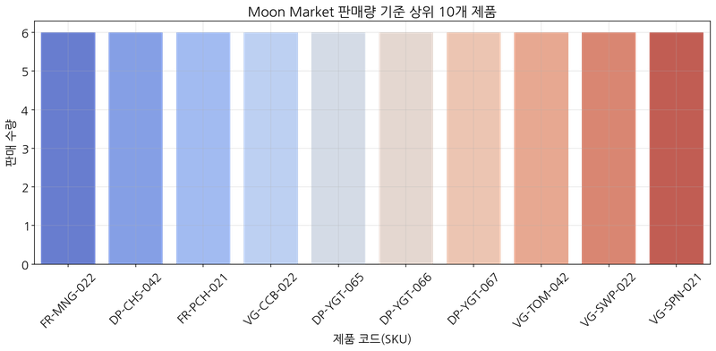
Moon Market 판매량 기준 상위 10개 제품 그래프
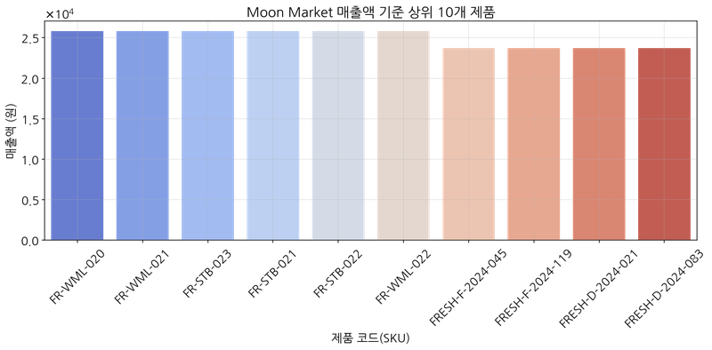
Moon Market 매출액 기준 상위 10개 제품 그래프
2.4 시간적 패턴 분석
2.4.1 요일별 매출
요일별 매출은 일요일(1,337,340원)과 금요일(1,262,840원)이 가장 높고, 화요일(1,162,160원)이 가장 낮습니다. 주말 쇼핑 패턴이 뚜렷하게 나타나므로, 주말 특별 프로모션이나 신선도 강화 전략을 통해 주말 매출을 더욱 증대시킬 수 있습니다.

Moon Market 요일별 매출 그래프
2.4.2 월별 매출
월별 매출은 5월(1,834,730원)이 가장 높고, 4월(1,423,340원)이 두 번째로 높으며, 2월(1,301,850원)이 가장 낮습니다. 5월은 계절적 요인(봄철 신선 식품 수요 증가)이나 특별 프로모션의 효과가 있었을 가능성이 높으며, 이 성공 요인을 분석하여 다른 월에도 적용할 필요가 있습니다.

Moon Market 월별 매출 그래프
3. 마케팅 효과 분석
3.1 프로모션별 매출 및 주문 건수
Moon Market에서는 다양한 프로모션을 운영하고 있으며, 프로모션별 매출 및 주문 건수는 다음과 같습니다:
- DAIRYPROMO: 1,602,000원 (270건) - 유제품 프로모션이 가장 높은 매출 기록
- FRUITPROMO5: 1,593,650원 (205건) - 과일 프로모션이 두 번째로 높은 매출 기록
- VEGGIESALE: 1,272,000원 (271건) - 가장 많은 주문 건수를 기록했으나 매출은 4위

Moon Market 프로모션별 총 매출 그래프
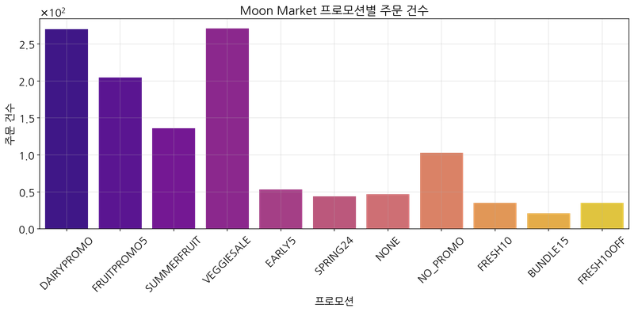
Moon Market 프로모션별 주문 건수 그래프
3.2 프로모션별 평균 주문 금액
프로모션별 평균 주문 금액은 SPRING24(12,438원)가 가장 높고, NONE(11,074원)이 두 번째로 높으며, FRESH10OFF(3,000원)가 가장 낮습니다. 고가 제품에 특화된 프로모션이 있으며, 이러한 프로모션은 주문 건수는 적지만 고객당 매출 기여도가 높습니다.
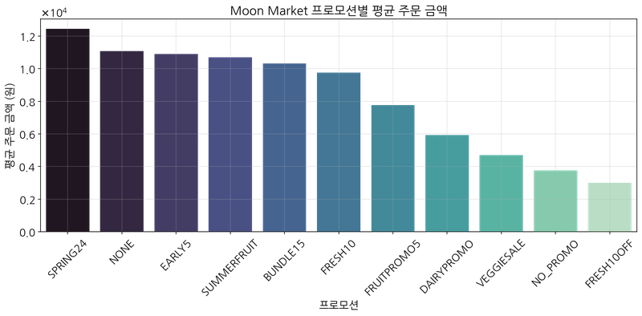
Moon Market 프로모션별 평균 주문 금액 그래프
3.3 프로모션 효과 비교
프로모션 적용 여부에 따른 효과를 비교한 결과, 프로모션 적용 시 평균 주문 금액이 약 95.8% 증가하는 것으로 나타났습니다.
- 프로모션 적용 주문(Yes): 평균 7,369원, 총 8,231,450원 (1,117건)
- 프로모션 미적용 주문(No): 평균 3,764원, 총 387,700원 (103건)
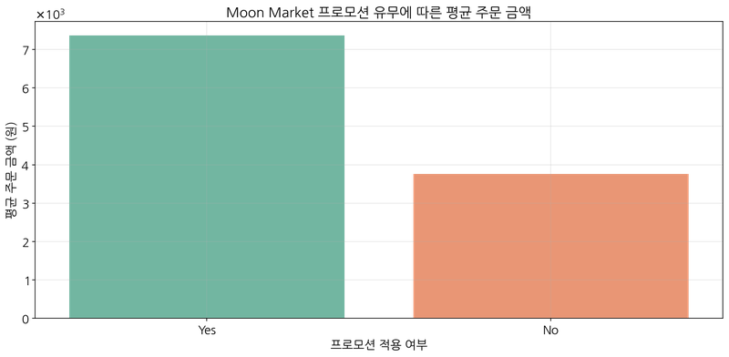
Moon Market 프로모션 유무에 따른 평균 주문 금액 비교 그래프
프로모션 효과 인사이트: 프로모션은 고객의 구매 결정과 구매 금액에 매우 큰 영향을 미치므로, 프로모션 전략을 지속적으로 강화해야 합니다. 특히 전체 매출의 95.5%가 프로모션을 통해 발생하고 있어, 효과적인 프로모션 설계가 매출 증대의 핵심 요소입니다.
3.4 카테고리별 프로모션 효과
카테고리별로 효과적인 프로모션이 뚜렷하게 구분됩니다:
- 과일: FRUITPROMO5(1,593,650원)와 SUMMERFRUIT(1,455,200원)가 가장 효과적
- 유제품: DAIRYPROMO(1,602,000원)가 압도적으로 효과적
- 채소: VEGGIESALE(1,272,000원)이 가장 효과적
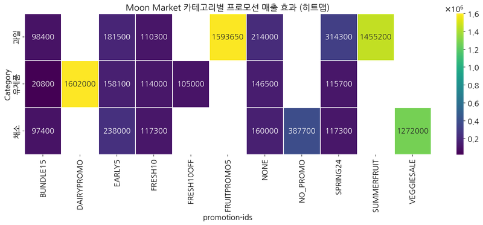
Moon Market 카테고리별 프로모션 매출 효과 히트맵
3.5 고객 세그먼트별 프로모션 효과
3.5.1 연령대별 프로모션 효과
연령대별로 효과적인 프로모션이 다르게 나타납니다:
- 20대: DAIRYPROMO(315,700원)가 가장 효과적
- 30대: SUMMERFRUIT(710,600원)와 VEGGIESALE(633,400원)이 효과적
- 40대: VEGGIESALE(550,400원)과 DAIRYPROMO(482,500원)이 효과적
- 50대: SUMMERFRUIT(734,800원)와 FRUITPROMO5(685,000원)이 효과적
- 60대: DAIRYPROMO(308,700원)가 가장 효과적
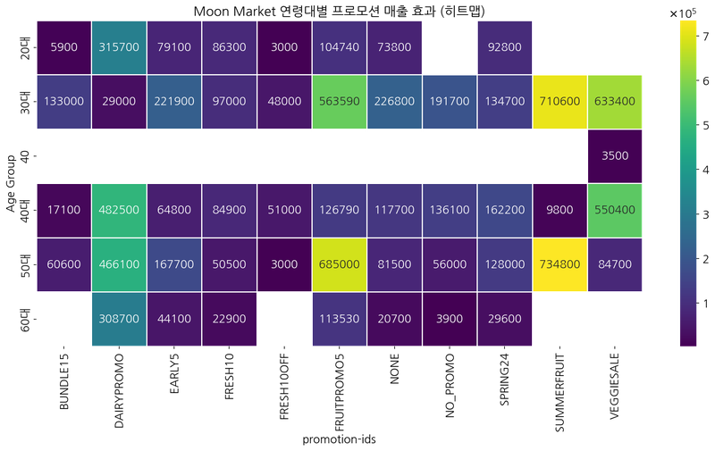
Moon Market 연령대별 프로모션 매출 효과 히트맵
3.5.2 성별 프로모션 효과
성별에 따라 효과적인 프로모션이 다르게 나타납니다:
- 여성: FRUITPROMO5(961,350원)와 DAIRYPROMO(634,700원)가 효과적
- 남성: SUMMERFRUIT(1,016,600원)와 DAIRYPROMO(967,300원)가 효과적
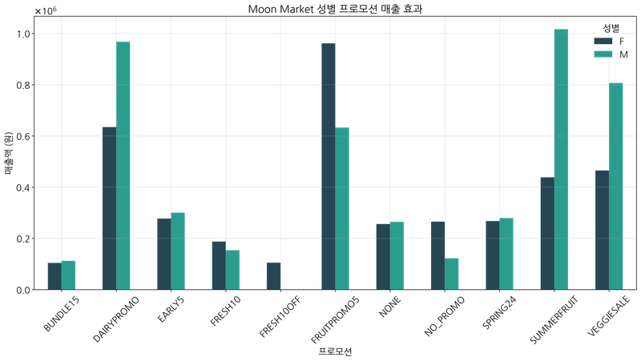
Moon Market 성별 프로모션 매출 효과 그래프
3.6 고객 세그먼트별 매출 분석
고객 세그먼트별 매출 분석 결과, 50대 남성, 30대 남성, 30대 여성이 전체 매출의 54.2%를 차지하는 핵심 고객층으로 나타났습니다. 특히 20대 남성은 평균 주문 금액(13,933원)이 가장 높지만, 주문 건수(12건)는 가장 적어 잠재적 고가치 고객층으로 분석됩니다.
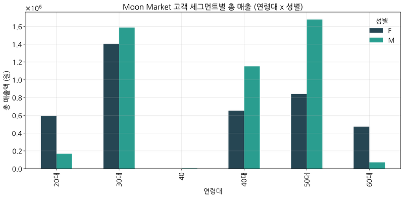
Moon Market 고객 세그먼트별 총 매출 그래프
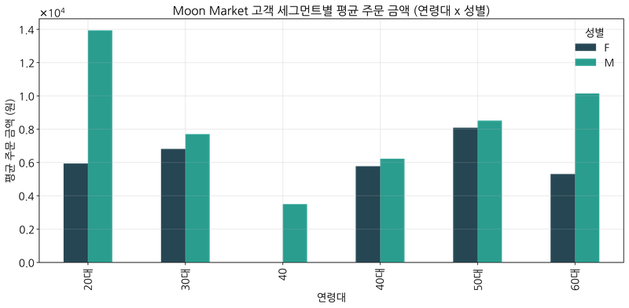
Moon Market 고객 세그먼트별 평균 주문 금액 그래프
고객 세그먼트 인사이트:
- 핵심 고객층(50대 남성, 30대 남녀)의 구매 패턴과 선호도를 심층 분석하여 맞춤형 마케팅 전략을 수립하고, 이들의 충성도를 높이는 데 집중해야 합니다.
- 20대 남성은 고가 제품을 선호하는 잠재적 고가치 고객층으로, 이 세그먼트를 타겟으로 한 마케팅을 강화하면 매출 증대 효과가 클 것으로 예상됩니다.
- 20대와 60대 고객층 확대를 위한 타겟 마케팅 전략이 필요합니다.
4. 종합 인사이트 및 제안
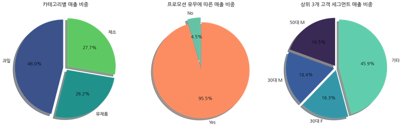
Moon Market 매출 구성 요약 (카테고리, 프로모션, 고객 세그먼트)
4.1 핵심 인사이트
- 과일 카테고리의 고수익성: 과일 카테고리는 전체 주문의 33.9%를 차지하지만 매출의 46.0%를 차지하여 가장 높은 매출 기여도를 보입니다. 과일 제품은 단위 가격이 높고 고객의 지불 의사도 높아 수익성이 좋습니다.
- 프로모션의 높은 효과: 프로모션 적용 시 평균 주문 금액이 95.8% 증가하며(3,764원 → 7,369원), 전체 매출의 95.5%가 프로모션을 통해 발생합니다. 프로모션은 매출 증대에 매우 효과적인 수단입니다.
- 핵심 고객층 식별: 50대 남성, 30대 남성, 30대 여성 세 세그먼트가 전체 매출의 54.2%를 차지하는 핵심 고객층입니다. 이 세그먼트의 구매 패턴과 선호도를 심층 분석하여 맞춤형 마케팅 전략을 수립할 필요가 있습니다.
- 잠재 고가치 고객: 20대 남성은 평균 주문 금액(13,933원)이 가장 높지만, 주문 건수(12건)는 가장 적습니다. 이 세그먼트를 타겟으로 한 마케팅을 강화하면 매출 증대 효과가 클 것으로 예상됩니다.
- 시간적 패턴: 5월 매출(1,834,730원)이 다른 월보다 현저히 높게 나타나며, 일요일과 금요일의 매출이 다른 요일보다 높습니다. 5월의 성공 요인을 분석하여 다른 월에도 적용하고, 주말 쇼핑 패턴을 활용한 주말 특별 프로모션 전략을 강화할 필요가 있습니다.
4.2 비즈니스 제안
- 제품 전략: 고품질 과일 제품 라인업을 강화하고 프리미엄 과일 상품을 확대하는 전략이 매출 증대에 효과적일 것입니다. 과일 제품은 단위 가격이 높고 고객의 지불 의사도 높아 수익성이 좋습니다.
- 프로모션 전략: 카테고리별, 고객 세그먼트별 맞춤형 프로모션 전략을 더욱 정교화해야 합니다. 특히 과일 카테고리에는 FRUITPROMO5와 SUMMERFRUIT, 유제품에는 DAIRYPROMO, 채소에는 VEGGIESALE과 같은 특화된 프로모션을 지속적으로 운영하고 발전시켜야 합니다.
- 고객 세그먼트 전략: 핵심 고객층(50대 남성, 30대 남녀)의 충성도를 강화하는 전략을 수립하고, 동시에 20대와 60대 고객층 확대를 위한 타겟 마케팅을 강화해야 합니다. 특히 20대 남성은 고가 제품을 선호하는 잠재적 고가치 고객층으로, 이 세그먼트를 타겟으로 한 마케팅을 강화하면 매출 증대 효과가 클 것으로 예상됩니다.
- 시간적 전략: 주말 특별 프로모션을 강화하고, 5월의 성공 요인을 분석하여 다른 월에도 적용하는 시즌별 전략을 수립해야 합니다. 주말 쇼핑 패턴이 뚜렷하게 나타나므로, 주말 특별 프로모션이나 신선도 강화 전략을 통해 주말 매출을 더욱 증대시킬 수 있습니다.
- 번들링 전략: 판매량 기준 상위 제품들은 대부분 6개 단위로 판매되고 있어 묶음 판매 전략이 효과적으로 작동하고 있습니다. 이러한 번들링 전략을 다른 인기 제품에도 확대 적용할 수 있습니다.
4.3 결론
Moon Market은 과일 카테고리의 고수익성, 프로모션의 높은 효과, 핵심 고객층(50대 남성, 30대 남녀)의 높은 매출 기여도, 주말 판매 강세, 5월의 계절적 성수기 등의 특성을 활용한 마케팅 전략을 수립해야 합니다. 특히 고객 세그먼트별, 카테고리별, 시즌별 맞춤형 프로모션 전략을 더욱 정교화하고, 고객 생애 가치가 높은 세그먼트에 집중하는 것이 중요합니다. 이러한 전략을 통해 Moon Market은 매출 증대와 고객 충성도 향상을 동시에 달성할 수 있을 것으로 기대됩니다.